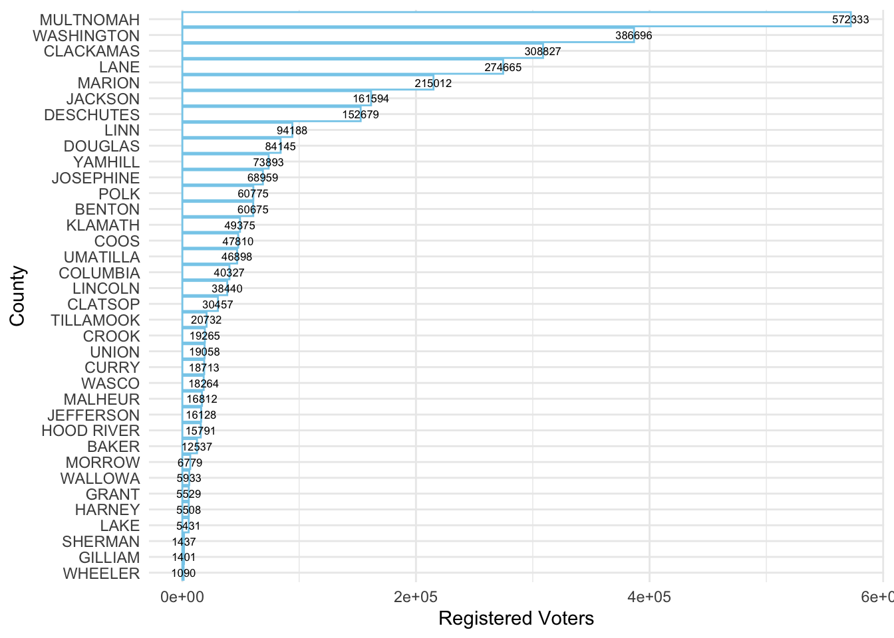
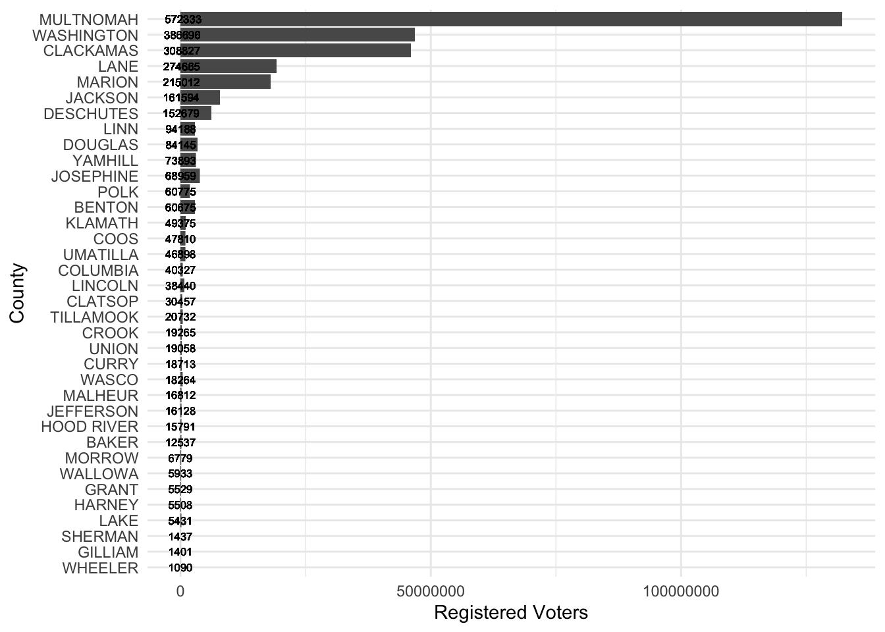

Code
library(RSocrata)
options(scipen=7)
library(tidyverse)
library(kableExtra)Robert W. Walker
November 25, 2020
The Socrata package makes it easy to access API calls built around SODA for open data access. If you try to skip the Socrata part, you usually only get a fraction of the available data. Socrata is intended to make open access data easier to manage and many government entities in the US use it as the portal to public data access. The R package makes interfacing with it much easier. First, how can we install it? It is on CRAN.
install.packages("RSocrata")
library(RSocrata)
SchoolSpend <- read.socrata("https://data.oregon.gov/resource/c7av-ntdz.csv")The first bit of data that I found details various bits about spending and students in Oregon school districts. I want to look at a few basics of this. There is a lot more to plot but this is enough for now.
I found this on Oregon’s open data portal. In the spirit of transparency, when I tried to update this post and transition it, the data are no longer available. I have followed up, but for now, I can no longer access the data.
library(magrittr); library(hrbrthemes)
SchoolSpend %>% group_by(county_name, school_year) %>% tally() %>% mutate(school_year = as.Date(school_year, format = "%m/%d/%Y")) %>% filter(school_year == max(school_year)) %>% ggplot() + aes(x=fct_reorder(county_name, n), y=n, fill=county_name) + geom_col() + coord_flip() + guides(fill=FALSE) + labs(x= "County", y="Number of School Districts") + theme_minimal()SchoolSpend %>% group_by(county_name) %>% mutate(school_year = as.Date(school_year, format = "%m/%d/%Y")) %>% filter(school_year == max(school_year)) %>% summarise(Students = sum(student_count), Year = mean(school_year), County = as.factor(county_name)) %>% unique() -> Dat
ggplot(Dat) + aes(x=fct_reorder(County, -Students), y=Students, fill=county_name) + geom_col() + coord_flip() + guides(fill=FALSE) + labs(x= "County", y="Students") + theme_minimal()There are a number of other bits of data organized by year and district. There is certainly more to examine, but then I found this.
The database of Voter Registrations in Oregon is also available and easily accessible.
VoterReg <- read.socrata("https://data.oregon.gov/resource/6a4f-ecbi.csv")
VoterReg %>%
filter(sysdate == "2020-11-03") %>%
group_by(county) %>%
summarise(Voters = sum(count_v_id)) %>%
ggplot() +
aes(x=fct_reorder(county, Voters), y=Voters, label=Voters) +
geom_col(fill="white", color="skyblue") +
geom_text(size=2.2) +
coord_flip() +
labs(x="County", y="Registered Voters") +
theme_minimal() -> Plot1
Plot1
CurrVR <- VoterReg %>% filter(sysdate == "2020-11-03")
CurrVR$DRE <- "Other"
CurrVR$DRE[CurrVR$party=="Democrat"] <- "Democrat"
CurrVR$DRE[CurrVR$party=="Republican"] <- "Republican"
CurrVR %>% group_by(county) %>% mutate(Voters = sum(count_v_id)) %>% ggplot(., aes(x=fct_reorder(county, Voters), y=Voters, label=Voters)) + geom_col() + geom_text(size=2.2) + coord_flip() + labs(x="County", y="Registered Voters") + theme_minimal()
Now let me split these up by grouping and plot them.